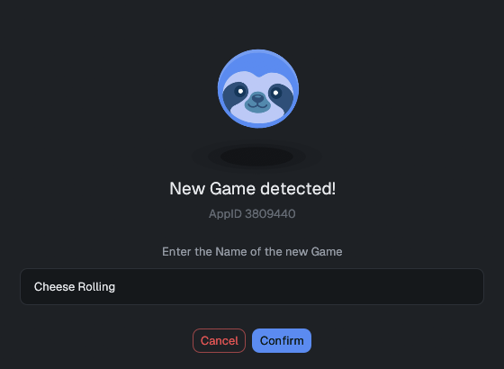
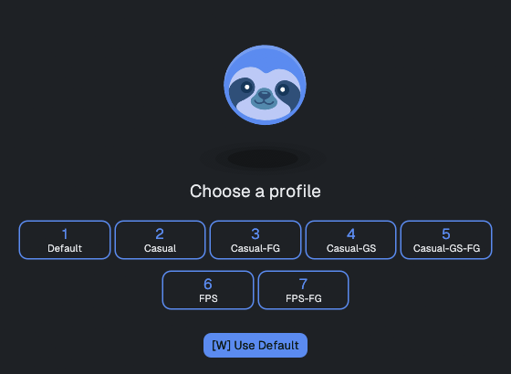
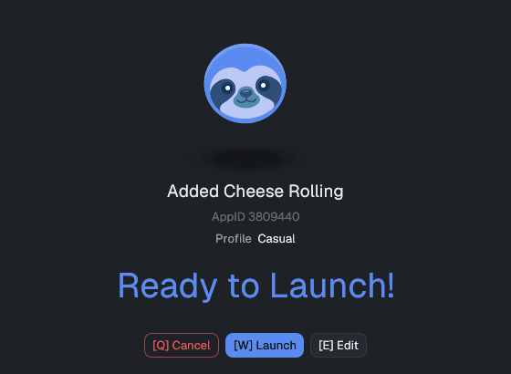
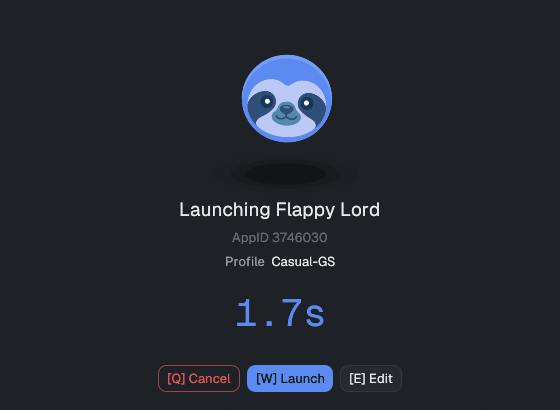
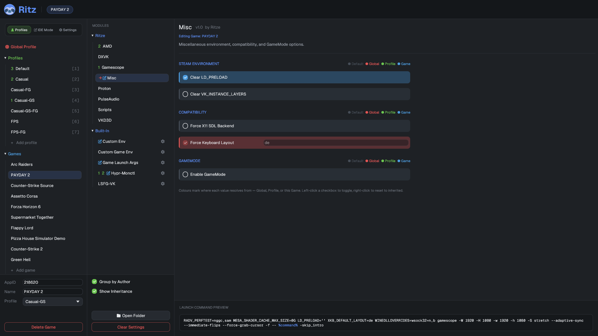

usage guide
Everything you do day-to-day: the launch splash, the settings window, scopes, and profiles.
the five invocation modes
| Command | What happens |
|---|---|
ritz %command% | Steam launch path: shows the splash, then launches (or opens the editor). |
ritz | Opens the settings GUI manager — no game launch. |
ritz --print %command% | Prints the assembled launch command and exits — never launches. Outside real Steam (which sets $SteamAppId for you), pair it with an id: RITZ_APPID=<id> ritz --print %command%. |
ritz --splash <appid> -- %command% | Internal: the splash window, spawned as its own process. |
ritz --edit [--launch] <appid> [-- %command%] | Opens the settings GUI scoped to one game. |
RITZ_APPID=<id> ritz %command% | Gives a non-Steam game a stable identity. |
The splash and the editor each spawn as their own process, so ritz stays the single windowless process Steam tracks from click to game exit — it forwards the exit code, fires lifecycle hooks, and cleans up when the game closes.
the launch splash
ritz shows one of three different always-on-top windows, depending on whether it already knows the game and whether it can resolve an AppID at all: a one-time naming wizard the first time it sees a known AppID, the countdown splash on every launch after that, or — if no AppID can be resolved — a setup screen that writes nothing and always cancels the launch, prompting you to fix the shortcut's Steam launch options. They're separate screens shown on separate launches, not steps of one session.
first launch: the new-game wizard
The first time ritz sees a game it has no config for, it runs this 3-step wizard instead of the countdown splash — and it's the whole wizard, there's no 4th step:



- Name — confirm/edit the game's display name (pre-filled from Steam where possible).
- Profile — pick a pinned profile with one key, or use the default.
- Confirm — a static "Ready to Launch!" screen, deliberately with no countdown (auto-launching on a timer here would risk saving a wrong guessed name) — review and launch, or jump into the editor first.
every launch after that: the countdown splash
Once a game is known, ritz shows this instead — a small splash with the game name, its assigned profile, and a countdown that launches automatically when it hits zero:

| Key | Action |
|---|---|
| W / Enter | Launch immediately. |
| E | Open this game's config in the editor; closing it then continues (or cancels) the launch. |
| Q / Esc | Cancel the launch. |
| timeout | Launches automatically after the splash timeout. |
The splash shows the game name, its assigned profile, and the countdown. It's keyboard-first, so it works inside gamescope/Big-Picture flows, but every button is also clickable with a mouse.
the settings window

Run ritz (or press E on the splash). The window has three columns:
- Navigator (left). A 3-tab bar — Profiles / IDE Mode / Settings — sits at the top. The Settings tab opens General Settings directly. The Profiles tab is the only one that shows a tree below it, listing Global Profile, your Profiles, and your Games; selecting one there chooses the scope you're editing. The IDE Mode tab opens a separate module-authoring surface — see the IDE Mode reference →.
- Modules (middle-left). The module tree for the selected scope — grouped by author or folder, with built-ins under their own node.
- Options (center). The selected module's fields. The bottom band previews the exact assembled launch command (for a game scope) or project info.
scopes & colors
Every option resolves through four layers, lowest to highest priority:
extension default → global → profile → game
| Color | Scope | Meaning |
|---|---|---|
| gray | Default | No override anywhere — the module's built-in default. |
| red | Global | Set in global.json; applies to every game. |
| green | Profile | Set in a profile; applies to games using that profile. |
| blue | Game | Set for this specific game; wins over everything. |
A value's color tells you where it currently comes from. While editing a given scope, values you set there show in that scope's color; inherited values show in the color of the scope they came from, and an inherited control is shown read-only.
profiles
A profile is a reusable bundle of settings — e.g. Competitive FPS (gamescope fullscreen + low latency) or Controller Couch (4K + FSR). A profile may itself inherit from a parent profile, forming an extra layer below it.
- Assign a profile to a game from the game's settings; that game then inherits the profile's values (which a game-scope override can still beat).
- Default profile — set one in General Settings to apply to every new game automatically.
- Pin up to 10 profiles (slots 1–10). Pinned profiles appear in the new-game wizard for one-key selection and sort to the top of the navigator.
general settings & maintenance
| Setting | Effect |
|---|---|
| Splash timeout | Seconds the launch splash counts down before launching (per-game overridable). |
| Default profile | Profile applied to games that don't pick their own. |
| Editor closing action | Whether closing the launch-mode editor window launches the game or cancels. |
| Monospace UI font | Render the UI in Geist Mono (techy) vs proportional Geist. |
| Touch Mode | Drag content to scroll (handy on touchscreens). |
| Use full UI width | Let setting rows fill the pane instead of capping their width. |
maintenance actions
- Reload Extensions / Reload Configs (Ctrl+R) — re-read modules and config from disk without restarting.
- Re-Export Modules and Plugins — restore the bundled modules, overwriting any on-disk copy that differs from the bundled version — including ones you've edited yourself (use after upgrading ritz, but back up any customized bundled module first).
- Clean Up Configs — remove stored values for variables that no longer exist in any module (e.g. after a module rename or update), across all scopes.
where things live
~/.config/ritz/
├─ general.json app settings
├─ global.json the global scope
├─ profiles/<name>.json profiles
├─ games/<appid>.json per-game overrides
├─ extensions/ modules (bundled + your drop-ins)
└─ plugins/ bundled pluginsOverride the location with $RITZ_CONFIG_DIR. Only explicitly-set
values are stored, so files stay small. Ready to write your own module? Head to the
extension reference →